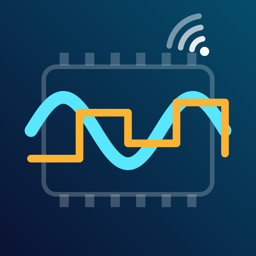

BLE Bench
What does BLE Bench do?
BLE Bench is a workbench for Bluetooth LE boards such as ESP32, nRF52, HM-10 modules and Arduino projects. It talks to your board over a serial-over-BLE link, plots the numbers it sends, drives it from buttons, sliders and a joystick, and lets you inspect every service and characteristic. It runs on iPhone, iPad and Mac. The core is free; one optional one-time purchase adds Pro. There is no subscription, account or advertising.
Getting started
- Virtual device: no board at hand? Open Virtual device in the sidebar. It is a simulated UART board (clearly marked “Simulated device”) that streams sensor-like signals and answers commands such as
help,status,led on,rate 200andch 8. No Bluetooth is used. - Connect a board: tap Scan for devices. Bluetooth access is requested at that moment. Pick your board; BLE Bench connects, discovers its services and selects the serial characteristics automatically for Nordic UART (NUS), HM-10 / CC2541 (FFE0/FFE1), Microchip Transparent UART and FFF0 modules. For other boards choose the characteristics in the GATT tab with Use for terminal.
- Peripheral mode: This iPhone / iPad / Mac as peripheral advertises a Nordic UART service named “BLE Bench”, so a board running NUS client code can connect to your phone or Mac. What the board writes appears in the terminal; what you type is sent back as notifications.
Tabs
- Terminal: received lines with timestamps, hex view, line ending (none, LF, CR, CRLF), escapes such as
\nand\xHH, hex input, history with the arrow keys and macro buttons. Long writes are split to the size the link allows. - Plot: lines like
temp:21.5,hum:40or1.2 3.4 5.6are plotted automatically, up to 8 channels at up to 200 Hz. Pause, drag to scroll back, pinch to zoom, hide channels, fixed or automatic Y axis. - Panel: build control panels with buttons, toggles, sliders and a joystick. Each control sends a payload template such as
servo {value}ordrive {x},{y}, as text or hex ({value:u8},{value:i16le}). Panels can be exported and imported as JSON. - GATT: every service, characteristic and descriptor with names for common UUIDs; read, write (with or without response) and notify; values shown as hex, text and numbers; the maximum write length of the link.
- Log: everything sent and received in the session with counters.
On iPad and Mac the terminal can sit next to the plot or the panel (split view). BLE Bench reconnects automatically when a board resets or comes back in range (can be turned off).
Free and Pro
- Free: scanning, GATT explorer, terminal with macros, the virtual device, peripheral mode, one control panel and a 2-channel plot.
- Pro (one-time, non-consumable in-app purchase): plot all 8 channels, unlimited control panels, export the session log (text or CSV) and plot data (CSV). One purchase works on iPhone, iPad and Mac with the same Apple Account. No subscription, no ads.
- Restore: Settings › Restore purchase or on the purchase screen. Refunds are handled by Apple at reportaproblem.apple.com.
Good to know
- BLE Bench works while it is open; it does not use Bluetooth in the background.
- Board does not show up? Make sure it advertises and is not connected to another phone or computer, and turn off Named devices only in Filter. Nothing received? Check that your sketch sends a line ending and pick the matching one in the terminal.
- Panels, macros and settings are saved on this device. English, Japanese, German, French, Spanish, Korean, Simplified Chinese and Brazilian Portuguese.
Contact
한국어
BLE Bench는 ESP32, nRF52, HM-10 모듈, 아두이노 프로젝트 같은 Bluetooth LE 보드를 위한 작업대입니다. 시리얼(UART) over BLE로 보드와 대화하고, 보내오는 숫자를 그래프로 그리고, 버튼·슬라이더·조이스틱으로 보드를 움직이고, 모든 서비스와 특성을 살펴볼 수 있습니다. iPhone, iPad, Mac에서 동작합니다. 기본 기능은 무료이고 선택형 한 번 구입으로 Pro가 열립니다. 구독·계정·광고는 없습니다.
- 가상 기기: 보드가 없어도 사이드바의 ‘가상 기기’를 열면 됩니다. 화면에 ‘가상 기기’라고 표시되는 시뮬레이션 UART 보드로, 센서 같은 신호를 보내고
help,status,led on,rate 200,ch 8같은 명령에 응답합니다. Bluetooth를 쓰지 않습니다. - 보드 연결: ‘기기 스캔’을 누를 때 Bluetooth 접근을 요청합니다. Nordic UART(NUS), HM-10(FFE0/FFE1), Microchip Transparent UART, FFF0 모듈은 시리얼 특성을 자동으로 고릅니다. 다른 보드는 GATT 탭의 ‘터미널에 사용’으로 직접 고릅니다.
- 주변기기 모드: 이 기기가 ‘BLE Bench’라는 이름으로 Nordic UART 서비스를 광고합니다. NUS 클라이언트 코드를 올린 보드가 접속하면 보드가 쓴 내용이 터미널에 나타나고, 입력한 내용은 알림으로 보냅니다.
- 터미널·그래프·패널·GATT·로그: 줄 끝(없음/LF/CR/CRLF)·16진수·이스케이프, 최대 8채널 200 Hz 실시간 그래프(일시정지·스크롤·확대), 버튼·토글·슬라이더·조이스틱 패널(JSON 내보내기·가져오기), 읽기·쓰기·알림과 최대 쓰기 길이, 세션 기록. iPad와 Mac에서는 터미널과 그래프·패널을 나란히 볼 수 있습니다. 보드가 재시작되면 자동으로 다시 연결합니다.
- 무료: 스캔, GATT 탐색기, 매크로가 있는 터미널, 가상 기기, 주변기기 모드, 패널 1개, 2채널 그래프.
- Pro(한 번 구입, 비소모성): 8채널 그래프, 패널 무제한, 세션 로그(텍스트·CSV)와 그래프 데이터(CSV) 내보내기. 같은 Apple 계정이면 iPhone·iPad·Mac 모두에서 쓸 수 있습니다. 복원은 설정 › ‘구매 복원’ 또는 구입 화면. 환불은 Apple(reportaproblem.apple.com)에서 처리합니다.
- BLE Bench는 열려 있는 동안만 동작하며 백그라운드에서 Bluetooth를 쓰지 않습니다. 패널, 매크로, 설정은 이 기기에만 저장됩니다.